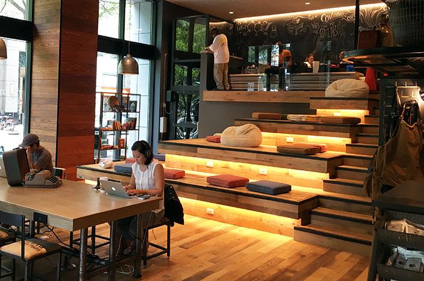

Pokeatery
Poke (pronounced “poh-kay”)is a raw salad found in Hawaiian cuisine. Fresh, healthy, and
tasty, it is a popular dish that is served at all varieties of meals and get-togethers, and found almost
anywhere on the islands, from fancy restaurants to neighborhood grocery stores. They offer a variety of fish
options, as well as a vegetarian tofu poke. My favorite dish is Volcano Poke Box, but instead of shrimp and tuna
I get salmon and tuna. Hmmmm.....Yuuuummmmm!!!


Sukoshi
Good, fresh ingredients create a bold menu of little bites for big appetites, from sushi
rolls to bowls, salads and more. My go-to order is Sake-to-me(Mega Maki style). It is sushi, but burrito style.
What are you waiting for? Let's go get some!


Amelie's French Bakery
Nothing better than a great cup of coffee, alongside a delicious pastry, in a stylish,
eclectic place with relaxing ambience.


Coco and Director Coffee Shop
Uptown Charlotte’s unique neighborhood coffeehouse, cafe & retail shop, welcoming
creativity with a co-lab space! Grab a small bite of their “cronut” (imagine if a croissant and a donut had
a sweet, flaky baby) plus their coffee, pecan and original flavors are always on the menu.


Yafo Kitchen
It’s like a more legit version of Zoe’s – much, much tastier. Think Mediterranean street
food concept with a user experience very similar to a Chipotle. They describe themselves as “Simple
Mediterranean fare with bold Middle-Eastern flavors.”